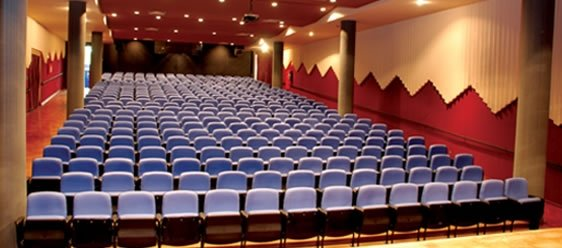

Vida no campus

pátio da escola
Ano que a escola foi fundada-1934
tem muitas coisas lá,tem a quadra, a capela, o teatro, a cantina, a piscina e todas as salas tem ar condicionado

Biblioteca da escola
foi fundada em 2000
tem livros

Teatro da escola
Foi fundado 1998
É bem grande e tem muitas cadeiras azuis
Conquistas da escola
Sair da pandemia e ir pra aula presencial

eu conheci os alunos pessoalmente
voltamos para a escola